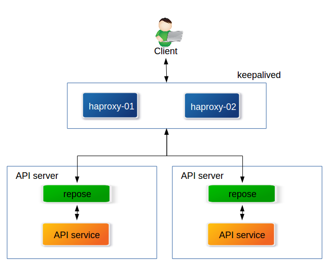
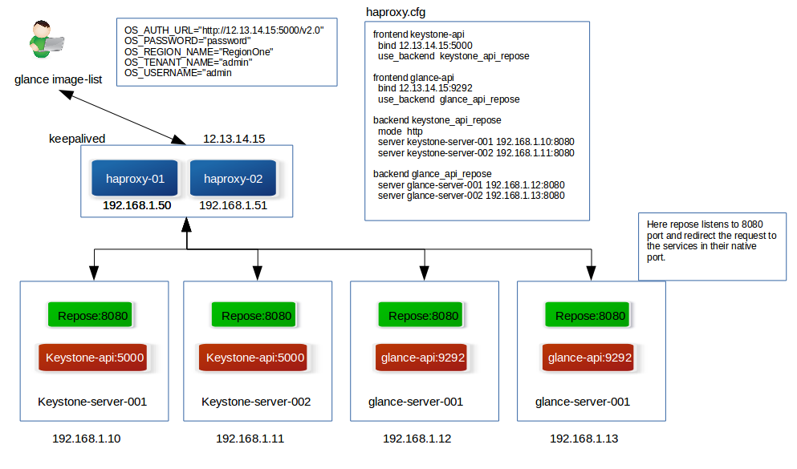

Repose to rate limit Openstack APIs
Posted on Sun 01 May 2016 in Openstack
Repose is an opensource middle ware tool to manipulate, authenticate, rate limit, validate, HTTP request logging and many more operations to the incoming API requests from the client to the API service.The service itself has REST based interface to perform operations. It obviously is highly scalable and extensible.
It enables the API servers to trust incoming API calls as validated and well formed. It can take incoming API requests and adjusts them to be validated for consumption by passing the API calls through a set of filters. It also limits the API requests so as to avoid high load in API servers.

Repose in Openstack ecosystem
Repose is quite useful in Openstack environments to process the API requests received by the Openstack clients. In medium level Openstack installation, is is common to have a all the services installed on a single node (usually called controller node) and in some big Openstack environments, all the services are installed on dedicated server(s) and are load balanced by some load balancer (usually haproxy). Even in such big clusters, with more than one node serving a single Openstack service, there is a high chance that the number of API request for a particular service gets high and the server load gets increased and in worst case the server might be crashed. With Openstack deployments getting bigger and there are different kind of tools sitting around it, from billing reports to customer heat, ansible, vagrant or terraform scripts and tons of other tool which can make a huge number of calls to API services, it might not be a wonder if the server crashes because of the API calls.
Repose to the rescue
Repose offers a solution mainly to the problem addressed above and also offers many other features with respect to the API calls. On quick look we just can’t put a single filter to all the different Openstack services. Glance API might not be invoked on a larger scale, whereas a keystone API calls might be a relatively huge number and not all API calls consume same amount of memory, a neutron API call may use less memory and a ceilometer call may use more memory. With these kind of complexity, we need some advanced filters which can modify and tweak API calls in a granular level. Repose provides a robust solution to this problem.
Setting up Repose to test Glance API
In this blog let us setup a quick repose service to rate limit the Glance API.
I have a testing Openstack environment. (I used a Packstack intallation in this case)
[root@packstack repose(keystone_admin)]# openstack service list
+----------------------------------+------------+--------------+
| ID | Name | Type |
+----------------------------------+------------+--------------+
| 30aeedda17b34e35b27e23d9f9d44fd2 | swift | object-store |
| 4bc0bfc7483a4838a20c5e38a454f597 | cinder | volume |
| 59e68fbe791f4372b14d296cda351c1a | neutron | network |
| 5e7c5b873f304d37884afd65fb632b92 | swift_s3 | s3 |
| 680d7bf86e9e442687afb7636117dbdf | novav3 | computev3 |
| 921547e706ae4929a6df1e29eb3a20a1 | nova | compute |
| aa39d2b920b9497883754a6ad8e548d9 | keystone | identity |
| b50f55825fd54522863d3896427405ee | cinderv2 | volumev2 |
| c553b014d9f244a3aa2bfe212a4e3ab5 | nova_ec2 | ec2 |
| cc4cb5d61dc141849d7f69184b5eb797 | ceilometer | metering |
| dce6182659fe46659de7c50539b0c0c4 | glance | image |
+----------------------------------+------------+--------------+
Glance endpoint –
[root@packstack repose(keystone_admin)]# keystone endpoint-list | grep `keystone service-list | grep glance | awk '{print $2}' `
| f324d78eccee4deb9e78f4c15f60081f | RegionOne | http://10.0.0.37:9292 | http://10.0.0.37:9292 | http://10.0.0.37:9292 | dce6182659fe46659de7c50539b0c0c4 |
Create necessary files and folder
Create necessary files and folder
Create Docker file
[root@packstack repose(keystone_admin)]# cat Dockerfile
# Dockerfile for Repose (www.openrepose.org)
FROM ubuntu
RUN apt-get update -y
RUN apt-get install -y wget
RUN wget -O - http://repo.openrepose.org/debian/pubkey.gpg | apt-key add - && echo "deb http://repo.openrepose.org/debian stable main" > /etc/apt/sources.list.d/openrepose.list
RUN apt-get update && apt-get install -y repose-valve repose-filter-bundle repose-extensions-filter-bundle
# Remove default Repose configuration files
RUN rm /etc/repose/*.cfg.xml
# Copy our configuration files in.
ADD ./repose_configs/*.cfg.xml /etc/repose/
# Start Repose
CMD java -jar /usr/share/repose/repose-valve.jar
In the same directory as Dockerfile create a folder named ‘repose_configs’ and create the following two files.
[root@packstack repose(keystone_admin)]# cat repose_configs/system-model.cfg.xml
<?xml version="1.0" encoding="UTF-8"?>
<!-- To configure Repose see: http://wiki.openrepose.org/display/REPOSE/Configuration -->
<system-model xmlns="http://docs.openrepose.org/repose/system-model/v2.0">
<repose-cluster id="repose">
<nodes>
<node id="repose_packstack" hostname="localhost" http-port="19292"/>
</nodes>
<filters>
<filter name="rate-limiting"/>
</filters>
<services>
</services>
<destinations>
<endpoint id="packstack" protocol="http" hostname="10.0.0.37" root-path="/" port="9292" default="true"/>
</destinations>
</repose-cluster>
<!-- Please set the enabled attribute to true to send us usage updates and help us improve Repose! -->
<phone-home enabled="false"
origin-service-id="your-service"
contact-email="your@service.com"/>
</system-model>
[root@packstack repose(keystone_admin)]# cat repose_configs/rate-limiting.cfg.xml
<?xml version="1.0" encoding="UTF-8"?>
<!-- http://wiki.openrepose.org/display/REPOSE/Rate+Limiting+Filter -->
<rate-limiting xmlns="http://docs.openrepose.org/repose/rate-limiting/v1.0">
<!--
Defines an endpoint with a matching regex to bind GET requests for
returning live rate limiting information.
-->
<request-endpoint uri-regex="" include-absolute-limits="false"/>
<global-limit-group>
<limit id="global" uri="*" uri-regex=".*" value="1000" unit="MINUTE"/>
</global-limit-group>
<!-- Limits for all other requests -->
<limit-group id="limited" groups="limited" default="true">
<limit id="all" uri="/v2/images" uri-regex="/v2/images" http-methods="GET" unit="MINUTE" value="5"/>
</limit-group>
<!-- Limits for WhiteListed IPs -->
<limit-group id="unlimited" groups="unlimited" default="false"/>
</rate-limiting>
In the rate-limiting file we mentioned that glance get request can accept only 5 request / minute.
Also the following 3 files in the repose_configs folder
https://raw.githubusercontent.com/rackerlabs/repose/master/repose-aggregator/installation/configs/core/container.cfg.xml
https://raw.githubusercontent.com/rackerlabs/repose/master/repose-aggregator/installation/configs/core/log4j2.xml
https://raw.githubusercontent.com/rackerlabs/repose/master/repose-aggregator/installation/configs/core/log4j2.xml
or you can simply clone all the files from
$ git clone https://github.com/bingoarunprasath/glance-docker-test-repose.git
[root@packstack repose(keystone_admin)]# ls
Dockerfile repose_configs
[root@packstack repose(keystone_admin)]# ls repose_configs/
container.cfg.xml log4j2.xml rate-limiting.cfg.xml response-messaging.cfg.xml system-model.cfg.xml
Build the docker image
[root@packstack repose(keystone_admin)]# sudo docker build -t glance_repose .
Run the Docker container
[root@packstack repose(keystone_admin)]# docker run -i -d -t -p 19292:19292 glance_repose
Do a glance image list on the repose port.
# curl -g -i -X GET http://localhost:19292/v2/images -H "X-Auth-Token: 72b77be2949b476ca8cae5efb3c3b0b9" -H "x-pp-user: admin"
HTTP/1.1 200 OK
Date: Sat, 27 Feb 2016 13:21:18 GMT
Via: 1.1 Repose (Repose/7.3.2.0)
X-Openstack-Request-Id: req-a458c22c-0764-4745-8554-605fbfb74108
Date: Sat, 27 Feb 2016 13:21:18 GMT
x-trans-id: eyJyZXF1ZXN0SWQiOiI0NGE0ODYzOC0zZmZhLTQ5MzMtODk5Zi05NjFjZjJhNjE5MGMiLCJvcmlnaW4iOm51bGx9
Content-Type: application/json; charset=UTF-8
Content-Length: 653
Server: Jetty(9.2.z-SNAPSHOT)
{"images": [{"status": "active", "name": "cirros", "tags": [], "container_format": "bare", "created_at": "2016-02-27T09:47:40Z", "size": 13200896, "disk_format": "qcow2", "updated_at": "2016-02-27T09:47:54Z", "visibility": "public", "self": "/v2/images/08c19039-8f5c-4eeb-8989-c0215856c5f2", "min_disk": 0, "protected": false, "id": "08c19039-8f5c-4eeb-8989-c0215856c5f2", "file": "/v2/images/08c19039-8f5c-4eeb-8989-c0215856c5f2/file", "checksum": "133eae9fb1c98f45894a4e60d8736619", "owner": "fdec1896f95447b79a66a10ee06db4ca", "virtual_size": null, "min_ram": 0, "schema": "/v2/schemas/image"}], "schema": "/v2/schemas/images", "first": "/v2/images"}[root@packstack repose(keystone_admin)]
Note: We are adding an additional header ‘x-pp-user’ for repose rate limit feature to work. This header will be added automatically when we have keystone integrated with openrepose.
Refer – https://repose.atlassian.net/wiki/display/REPOSE/Keystone+v2+Filter
Test if rate limit is working
some quick script –
1 2 3 4 5 6 7 8 | #!/bin/bash
OUT_FILE="repose-curl.out"
rm -f $OUT_FILE
touch $OUT_FILE
for i in {1..10} ; do
echo -en "\n\n~~~~~ Attempt #$i ~~~~~\n\n" >> $OUT_FILE
curl -g -i -X GET http://localhost:19292/v2/images -H "X-Auth-Token: 72b77be2949b476ca8cae5efb3c3b0b9" -H "x-pp-user: admin" >> $OUT_FILE 2>&1
done
|
In the output file it is observed that only 5 request were succeeded and the rest for into error as shown below.
# curl -g -i -X GET http://localhost:19292/v2/images -H "X-Auth-Token: 72b77be2949b476ca8cae5efb3c3b0b9" -H "x-pp-user: admin"
HTTP/1.1 413 Request Entity Too Large
Date: Sat, 27 Feb 2016 13:32:13 GMT
Retry-After: Sat, 27 Feb 2016 13:33:07 GMT
Content-Type: application/json
Via: 1.1 Repose (Repose/7.3.2.0)
x-trans-id: eyJyZXF1ZXN0SWQiOiJjOWNjMGQ3My1jMDhiLTQ5ZTMtODJlZC03NjMwZmVkODU4NWIiLCJvcmlnaW4iOm51bGx9
Content-Length: 223
Server: Jetty(9.2.z-SNAPSHOT)
{
"overLimit" : {
"code" : 413,
"message" : "OverLimit Retry...",
"details" : "Error Details...",
"retryAfter" : "2016-02-27T13:33:07Z"
}
}
Voila !!
The above is just a very simple use case of repose.
A typical production environment would look some thing like this –
